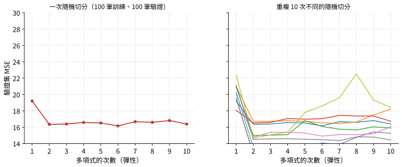
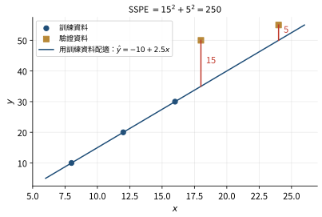
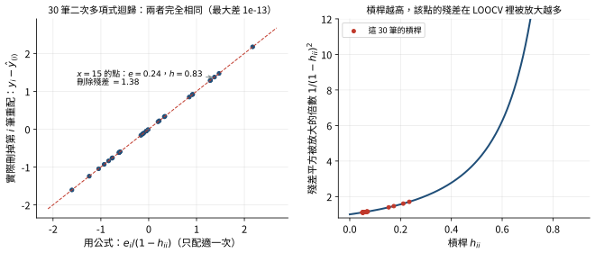
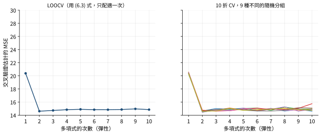
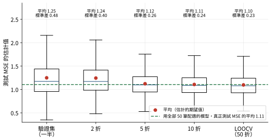
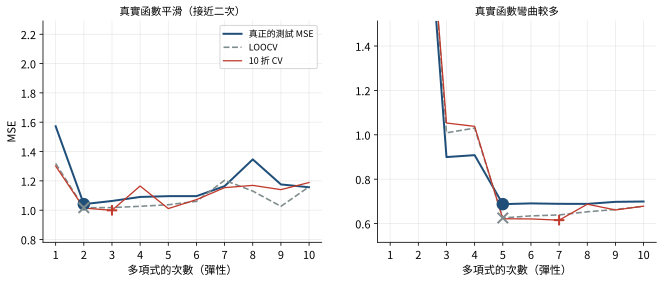

6.1 驗證集方法
一、做法
驗證集方法（validation set approach），Frees 稱為樣本外驗證（out-of-sample validation）：從資料中隨機移出一部分，這部分叫驗證集（validation set）或保留集（hold-out set），剩下的是訓練集。只用訓練集配適模型，再用驗證集當測試資料計算 MSE。
設共有 \(n\) 筆，前 \(n_1\) 筆是訓練資料、後 \(n_2=n-n_1\) 筆是驗證資料（編號只是為了方便，實際上是隨機選的）。驗證集的 MSE 是
\[\text{MSE}=\frac1{n_2}\sum_{i=n_1+1}^{n_1+n_2}(y_i-\hat y_i)^2 ,\]
其中 \(\hat y_i\) 是用訓練資料配適的模型對第 \(i\) 筆的預測。也可以不除以 \(n_2\)，改用預測誤差平方和（sum of squared prediction errors）
\[\text{SSPE}=\sum_{i=n_1+1}^{n_1+n_2}(y_i-\hat y_i)^2\qquad(6.1)\]
SSPE 就是 MSE 乘上 \(n_2\)。比較幾個候選模型時，選 MSE（或 SSPE）最小的那個；同一個驗證集下兩者的排序相同。
Frees 的經驗法則：觀察值在 100 筆以下時，用 25%～35% 的資料當驗證集；500 筆以上時用 50%。
二、兩個缺點
- 結果變異大。驗證集是隨機選的，換一種切法，算出的 MSE 可能差很多，甚至選出不同的模型。
- 高估測試誤差。訓練集比原資料小很多。用比較少的資料配適，估計值的變異數比較大，預測比較差，所以驗證集上的 MSE 往往高於「用全部 \(n\) 筆配適的模型」真正的測試 MSE。

模擬一份類似 ISLR Auto 資料的資料（200 筆，反應隨 \(x\) 先快後慢地下降），用驗證集方法比較 1～10 次多項式。左：一次隨機切分，二次多項式比直線好很多（驗證 MSE 從 19.2 降到 16.4），再提高次數幾乎沒有改善。右：換 10 種隨機切分，二次多項式的驗證 MSE 從 12.7 到 16.7 都有；其中 5 種切分的最低點落在 6～8 次（只比 2 次低一點點）。這就是第一個缺點：數值與結論都依賴切法。這一節的精選習題
以下資料配適 \(y_i=\beta_0+\beta_1x_i+\varepsilon_i\)：
| \(x\) |
8 |
12 |
16 |
18 |
24 |
| \(y\) |
10 |
20 |
30 |
50 |
55 |
用樣本外驗證來驗證模型，驗證集是最後兩點 \((18,50)\) 與 \((24,55)\)。求 SSPE。
解析
第一步：只用訓練資料配適。 訓練資料是前三點 \((8,10)\)、\((12,20)\)、\((16,30)\)，剛好在一條直線上，斜率 \(\dfrac{20-10}{12-8}=2.5\)，截距 \(10-2.5(8)=-10\)，所以 \(\hat y=-10+2.5x\)。（用公式也一樣：\(\bar x=12\)、\(\bar y=20\)、\(S_{xy}=(-4)(-10)+0+(4)(10)=80\)、\(S_{xx}=32\)，\(b_1=2.5\)、\(b_0=20-30=-10\)。）
第二步：預測驗證點。 \(\hat y_4=-10+2.5(18)=35\)，\(\hat y_5=-10+2.5(24)=50\)。
第三步： \(\text{SSPE}=(50-35)^2+(55-50)^2=225+25=250\)。

藍線只由三個訓練點決定；紅色線段是兩個驗證點的預測誤差 15 與 5。易錯
不能用全部 5 點配適再算這兩點的殘差；SSPE 不除以 2（除以 2 是驗證集 MSE \(=125\)）。
6.2 交叉驗證
交叉驗證（cross-validation）用有系統、非隨機（或較不隨機）的方式選出多組測試資料，分別計算 MSE 再平均。它需要配適很多次，但現代電腦讓這變得可行。下面介紹兩種。
一、留一交叉驗證（LOOCV）
留一交叉驗證（leave-one-out cross-validation，LOOCV）：每次只留出一筆觀察當測試資料，其他 \(n-1\) 筆當訓練資料。每一筆輪流被留出一次，共配適 \(n\) 次，再把 \(n\) 個測試誤差平均：
\[\text{CV}_{(n)}=\frac1n\sum_{i=1}^n\text{MSE}_i\qquad(6.2)\]
其中 \(\text{MSE}_i=(y_i-\hat y_{(i)})^2\) 是刪掉第 \(i\) 筆配適的模型對第 \(i\) 筆的預測誤差平方。測試資料只有一筆，所以沒有加總、也沒有除法（除以 1）。
LOOCV 避開了驗證集方法的兩個缺點：結果不隨機（每一筆都恰好被留出一次，沒有選擇的空間）；每次只少一筆，訓練集幾乎和原資料一樣大，MSE 不會被明顯高估。
最小平方的捷徑公式。 一般來說 LOOCV 要配適 \(n\) 次。但模型若以最小平方配適（線性迴歸、多項式迴歸），完全不必重新配適：
\[\text{CV}_{(n)}=\frac1n\sum_{i=1}^n\left(\frac{y_i-\hat y_i}{1-h_{ii}}\right)^2\qquad(6.3)\]
其中 \(e_i=y_i-\hat y_i\) 是用全部 \(n\) 筆配適的殘差，\(h_{ii}\) 是第 \(i\) 筆的槓桿（第 5 章 5.1 節）。
推導：\(y_i-\hat y_{(i)}=\dfrac{e_i}{1-h_{ii}}\)
第 5 章 5.2 節用 Sherman–Morrison 公式推導過這個結果，這裡給一個只用最小平方定義的推導。
令 \(\mathbf b_{(i)}\) 是刪掉第 \(i\) 筆後的最小平方解，\(\hat y_{(i)}=\mathbf x_i'\mathbf b_{(i)}\) 是它對第 \(i\) 筆的預測。造一個新的反應向量 \(\tilde{\mathbf y}\)：其他各筆不變，只把第 \(i\) 筆換成 \(\hat y_{(i)}\)。
第一步：\(\tilde{\mathbf y}\) 的最小平方解就是 \(\mathbf b_{(i)}\)。 對任何 \(\mathbf b\)，
\[\sum_{j\ne i}(y_j-\mathbf x_j'\mathbf b)^2+(\hat y_{(i)}-\mathbf x_i'\mathbf b)^2\ \ge\ \sum_{j\ne i}(y_j-\mathbf x_j'\mathbf b_{(i)})^2+0 ,\]
因為第一項在 \(\mathbf b=\mathbf b_{(i)}\) 時最小，第二項不小於 0；而 \(\mathbf b=\mathbf b_{(i)}\) 時等號成立。所以 \(\mathbf b_{(i)}\) 讓 \(\tilde{\mathbf y}\) 的誤差平方和最小。
第二步：用帽子矩陣寫出 \(\hat y_{(i)}\)。 \(\tilde{\mathbf y}\) 的配適值是 \(H\tilde{\mathbf y}\)，第 \(i\) 個就是 \(\mathbf x_i'\mathbf b_{(i)}=\hat y_{(i)}\)：
\[\hat y_{(i)}=\sum_{j\ne i}h_{ij}y_j+h_{ii}\hat y_{(i)}=\Big(\hat y_i-h_{ii}y_i\Big)+h_{ii}\hat y_{(i)},\]
這裡用了 \(\hat y_i=\sum_jh_{ij}y_j\)。
第三步：解出來。 \(\hat y_{(i)}(1-h_{ii})=\hat y_i-h_{ii}y_i\)，所以
\[y_i-\hat y_{(i)}=\frac{y_i(1-h_{ii})-\hat y_i+h_{ii}y_i}{1-h_{ii}}=\frac{y_i-\hat y_i}{1-h_{ii}}=\frac{e_i}{1-h_{ii}} .\]
平方後平均就是 (6.3)。推導只用到「最小平方」與「預測是 \(\mathbf y\) 的線性函數 \(H\mathbf y\)」，所以 ISLR 說捷徑對最小平方的線性或多項式迴歸成立；對一般模型（例如邏輯斯迴歸）不成立，必須真的配適 \(n\) 次。

左：30 筆資料配適二次多項式，逐一刪掉每筆重新配適算出的刪除殘差 \(y_i-\hat y_{(i)}\)（縱軸），和只配適一次用公式算的 \(e_i/(1-h_{ii})\)（橫軸）完全落在 45° 線上。\(x=15\) 那一點槓桿 0.83，原始殘差只有 0.24，刪除殘差卻是 1.38。右：殘差平方在 LOOCV 中被放大 \(1/(1-h_{ii})^2\) 倍，槓桿越高放大越多。
(6.3) 和殘差變異數 \(s^2=\sum e_i^2/(n-k-1)\) 很像，差別是每個殘差先除以 \(1-h_{ii}\)。槓桿越高，該點的殘差被放大越多，估計出的 MSE 越高。這也和標準化殘差除以 \(s\sqrt{1-h_{ii}}\) 的道理相同：高槓桿點的殘差被配適線「壓小」了，要放大回來。
所有槓桿相等時：LOOCV 比 \(s^2\) 大多少
槓桿的平均是 \((k+1)/n\)。若每一筆的槓桿都等於平均（或用平均來近似，這就是「廣義交叉驗證」GCV 的想法），(6.3) 變成
\[\text{CV}_{(n)}=\frac{\text{SSE}}{n\big(1-\frac{k+1}{n}\big)^2}=\frac{n\,\text{SSE}}{(n-k-1)^2}=s^2\cdot\frac{n}{n-k-1} .\]
\(s^2\) 除以 \(n-k-1\) 已經修正了「用同一份資料估計參數」的樂觀，LOOCV 再多乘 \(\frac{n}{n-k-1}\)，因為它估計的是對新觀察的預測誤差：新觀察除了誤差 \(\sigma^2\)，還要承擔係數估計的不確定性。習題 6.2 就是這個情形。
PRESS。 (6.2) 不除以 \(n\)，叫做預測殘差平方和（predicted residual sum of squares，PRESS）：
\[\text{PRESS}=\sum_{i=1}^n(y_i-\hat y_{(i)})^2\qquad(6.4)\]
\[\phantom{\text{PRESS}}=\sum_{i=1}^n\left(\frac{e_i}{1-h_{ii}}\right)^2\qquad(6.5)\]
(6.5) 只對最小平方成立。\(\text{PRESS}=n\cdot\text{CV}_{(n)}\)。
二、\(k\) 折交叉驗證
\(k\) 折交叉驗證（\(k\)-fold cross-validation）：把資料隨機分成 \(k\) 組（折），大小大致相同。每次留出一組當測試資料、用其他 \(k-1\) 組配適，共配適 \(k\) 次，再把 \(k\) 個測試 MSE 平均：
\[\text{CV}_{(k)}=\frac1k\sum_{i=1}^k\text{MSE}_i\qquad(6.6)\]
這裡的 \(k\) 和解釋變數的個數無關（講義的註腳）。
- 通常取 \(k=5\) 或 \(k=10\)。
- 分組是隨機的，所以結果仍有一些隨機性，但比驗證集方法小得多。
- LOOCV 是 \(k=n\) 的特例：每組只有一筆。
- 每一筆觀察恰好當一次測試資料、\(k-1\) 次訓練資料。
- 各組大小不相等時，應以組的大小加權：\(\text{CV}_{(k)}=\sum_j\frac{n_j}{n}\text{MSE}_j=\frac1n\sum_{\text{全部 }i}(y_i-\hat y_i^{\text{CV}})^2\)。各組等大時就是 (6.6) 的簡單平均。

和上一節同一份 200 筆的資料。左：LOOCV 的估計只有一條曲線（不隨機），用 (6.3) 只要配適一次。右：10 折交叉驗證用 9 種不同的隨機分組，9 條曲線幾乎重疊，變異遠小於驗證集方法的 10 條曲線。兩者都指出二次多項式最好。
三、偏差與變異數的取捨：\(k\) 要取多少
交叉驗證本身也是一個估計量：它估計的是用全部 \(n\) 筆配適的模型的測試 MSE。這個估計量也有偏差與變異數。
偏差：\(k\) 折交叉驗證每次用 \(\frac{k-1}{k}n\) 筆訓練。訓練資料越少，配適越差，測試誤差越被高估。所以
\[\text{偏差：驗證集方法}>\text{5 折}>\text{10 折}>\text{LOOCV} .\]
LOOCV 用了最大的訓練集（\(n-1\) 筆），高估得最少。
變異數（ISLR 的論證，也是考試的標準答案）：LOOCV 平均的是 \(n\) 個模型的結果，這 \(n\) 個模型的訓練資料幾乎完全一樣（任兩個只差一筆），所以它們的測試誤差高度相關。高度相關的量取平均，變異數降不下來。\(k\) 折交叉驗證的 \(k\) 個訓練集重疊較少，相關較低，平均後變異數較小。所以
\[\text{變異數：LOOCV}>\text{10 折}>\text{5 折} .\]
一般而言 \(k\) 越大，偏差越小、變異數越大。\(k=5\) 或 10 被認為是兩者之間的好折衷。
考試答案與實際情形
考試請照上面 ISLR 的結論作答。但要知道變異數的比較並沒有那麼絕對：高度相關會讓 LOOCV 的變異數變大，可是 \(k\) 小時每個模型的訓練資料少、配適本身更不穩定，又會讓 \(k\) 折的變異數變大，兩股力量哪個強要看模型。對最小平方這類穩定的方法，LOOCV 的變異數往往不比 10 折大（下圖）；對決策樹或「先選變數再配適」這類不穩定的程序，LOOCV 的變異數才可能明顯偏大。

1,500 份模擬資料（每份 50 筆，配適三次多項式），比較五種方法對測試 MSE 的估計。綠色虛線是「用全部 50 筆配適的模型」真正測試 MSE 的平均 1.11。偏差和理論一致：驗證集方法（只用 25 筆訓練）與 2 折平均約 1.25，明顯高估；5 折、10 折、LOOCV 幾乎不偏。變異數方面，這個最小平方的例子裡標準差隨 \(k\) 遞減（0.48、0.40、0.26、0.24、0.23），LOOCV 並沒有比 10 折大。
交叉驗證不必把 MSE 估得很準，只要選對彈性。 實務上交叉驗證最常的用途是選模型：比較不同彈性（多項式次數、變數個數、第 8 章的調整參數）下的 CV 值，選最小的。即使 CV 估計的 MSE 水準有偏差，只要曲線的形狀對，最低點的位置仍然正確。

兩種已知真實函數的模擬（各 100 筆），比較真正的測試 MSE（藍，以 20,000 筆新資料計算）、LOOCV（灰虛線）與 10 折 CV（紅）。符號標出各曲線的最低點。左：真實函數接近二次，真正的測試 MSE 與 LOOCV 都在 2 次最小，10 折在 3 次，但 2 次與 3 次的真實測試 MSE 只差 0.02。右：真實函數彎曲較多，真實測試 MSE 與 LOOCV 都在 5 次最小，10 折在 7 次，5～8 次的真實測試 MSE 幾乎一樣（0.688～0.691）。
講義整理的比較：
|
LOOCV 的優點 |
\(k\) 折交叉驗證的優點 |
| 計算 |
最小平方時用 (6.3)，只要配適一次，非常有效率 |
不是最小平方時，只要配適 \(k\) 次而不是 \(n\) 次 |
| 偏差 |
訓練集最大（\(n-1\) 筆），高估測試誤差最少 |
|
| 變異數 |
|
訓練集重疊較少、相關較低，變異數較小（ISLR） |
\(k\) 折交叉驗證因為變異數較低，整體的估計誤差（MSE）可能反而比 LOOCV 小。
四、分類問題
反應是類別時（第 12、15 章），把平方誤差換成誤分類率即可，例如 LOOCV 變成
\[\text{CV}_{(n)}=\frac1n\sum_{i=1}^nI\big(y_i\ne\hat y_{(i)}\big),\]
\(I(\cdot)\) 在預測錯誤時為 1。\(k\) 折的版本同理。
考試技巧
- SSPE 是總和，MSE 是平均；PRESS 是總和，\(\text{CV}_{(n)}\) 是平均，\(\text{PRESS}=n\,\text{CV}_{(n)}\)。
- 驗證集的預測必須用只由訓練集配適的模型；驗證點不能拿來估係數（習題 6.1）。
- 捷徑公式的 \(e_i\)、\(h_{ii}\) 都來自全部資料的配適。
- 兩個模型比較交叉驗證結果時，看的是 CV 的 MSE，不是訓練資料的 \(R^2\)、調整 \(R^2\)、MSE 或 AIC（習題 6.8）。
- 觀念題的方向：\(k\) 越大，偏差越小、變異數越大、計算越多；LOOCV 是 \(k\) 最大的情形；驗證集方法偏差最大且結果最隨機。
本章公式總表（講義表 6.1）
- 預測誤差平方和：\(\text{SSPE}=\sum_{i=n_1+1}^{n_1+n_2}(y_i-\hat y_i)^2\) (6.1)
- LOOCV：\(\text{CV}_{(n)}=\dfrac1n\sum_{i=1}^n\text{MSE}_i\) (6.2)；\(\text{PRESS}=\sum_{i=1}^n(y_i-\hat y_{(i)})^2\) (6.4)
- 最小平方的 LOOCV：\(\text{CV}_{(n)}=\dfrac1n\sum_{i=1}^n\left(\dfrac{e_i}{1-h_{ii}}\right)^2\) (6.3)；\(\text{PRESS}=\sum_{i=1}^n\left(\dfrac{e_i}{1-h_{ii}}\right)^2\) (6.5)
- \(k\) 折交叉驗證：\(\text{CV}_{(k)}=\dfrac1k\sum_{i=1}^k\text{MSE}_i\) (6.6)
這一節的精選習題
線性迴歸模型 \(y_i=\beta_0+\beta_1x_i+\varepsilon_i\)，5 筆觀察的殘差與槓桿如下：
| 殘差 |
3 |
\(-1\) |
\(-3\) |
\(-3\) |
4 |
| 槓桿 |
0.6 |
0.3 |
0.2 |
0.3 |
0.6 |
求 PRESS 統計量。
答案
\(\text{PRESS}=190.72\)
解析
由 (6.5)，每個殘差除以 \(1-h_{ii}\) 再平方：
\[\text{PRESS}=\left(\frac{3}{0.4}\right)^2+\left(\frac{-1}{0.7}\right)^2+\left(\frac{-3}{0.8}\right)^2+\left(\frac{-3}{0.7}\right)^2+\left(\frac{4}{0.4}\right)^2\]
\[=56.25+2.0408+14.0625+18.3673+100=190.72 .\]
檢查：有截距的模型殘差和為 0（\(3-1-3-3+4=0\)），槓桿和為 \(k+1=2\)。兩個槓桿 0.6 的點貢獻了 156，佔八成。
易錯
PRESS 是總和，不除以 5（除以 5 是 \(\text{CV}_{(5)}=38.14\)）。
（MAS-I 樣題 #3）關於重抽樣方法的敘述：
I. 留一交叉驗證（LOOCV）是 \(k\) 折交叉驗證的特例。
II. \(k<n\) 時，\(k\) 折交叉驗證的變異數比 LOOCV 高。
III. 和驗證集方法相比，LOOCV 傾向高估測試誤差。
哪些正確？
(A) 只有 I (B) 只有 II (C) 只有 III (D) I、II、III (E) 以上皆非
解析
I. 正確。LOOCV 就是 \(k=n\) 的 \(k\) 折交叉驗證。
II. 錯誤。方向反了：\(k\) 越小，各訓練集重疊越少、越不相關，\(k\) 折交叉驗證的變異數比 LOOCV 低。
III. 錯誤。訓練集越大，偏差越小。LOOCV 的訓練集（\(n-1\) 筆）比驗證集方法（通常只有一半到四分之三）大，所以 LOOCV 高估得比較少；傾向高估的是驗證集方法。
（MAS-I 2019 秋 #29）精算師有 4 筆觀察的資料，要用 LOOCV 決定兩個模型哪個配適較好，以 MSE 最小為準。應變數的值 \(\mathbf y=(y_1,y_2,y_3,y_4)=(1.55,1.55,1.60,1.95)\)。各訓練子集下兩個模型的配適值：
| 使用的觀察 |
模型 1：\(\hat y_1\) |
\(\hat y_2\) |
\(\hat y_3\) |
\(\hat y_4\) |
模型 2：\(\hat y_1\) |
\(\hat y_2\) |
\(\hat y_3\) |
\(\hat y_4\) |
| 1, 2, 3 |
1.50 |
1.60 |
1.20 |
1.80 |
1.60 |
1.70 |
1.60 |
\(Z\) |
| 1, 2, 4 |
2.00 |
1.50 |
1.10 |
1.90 |
1.80 |
1.40 |
1.30 |
1.70 |
| 1, 3, 4 |
1.75 |
1.55 |
1.70 |
2.10 |
1.40 |
1.30 |
1.50 |
1.95 |
| 2, 3, 4 |
1.70 |
1.65 |
1.60 |
2.00 |
1.60 |
1.70 |
1.20 |
2.00 |
求精算師會偏好模型 2 的 \(Z\) 最大值。
(A) 小於 1.5 (B) \([1.5,1.8)\) (C) \([1.8,2.1)\) (D) \([2.1,2.4)\) (E) 至少 2.4
解析
第一步：每一列只取被留出那一筆的預測。 使用 1,2,3 時留出的是第 4 筆，看 \(\hat y_4\)；使用 1,2,4 時看 \(\hat y_3\)；使用 1,3,4 時看 \(\hat y_2\)；使用 2,3,4 時看 \(\hat y_1\)。
第二步：兩個模型的誤差平方和（兩者都除以 4，比較時可以省略）。
模型 1：
\[(1.80-1.95)^2+(1.10-1.60)^2+(1.55-1.55)^2+(1.70-1.55)^2\]
\[=0.0225+0.25+0+0.0225=0.295 .\]
模型 2：
\[(Z-1.95)^2+(1.30-1.60)^2+(1.30-1.55)^2+(1.60-1.55)^2\]
\[=(Z-1.95)^2+0.09+0.0625+0.0025=(Z-1.95)^2+0.155 .\]
第三步： 偏好模型 2 需要 \((Z-1.95)^2+0.155<0.295\)，即 \((Z-1.95)^2<0.14\)、\(|Z-1.95|<0.3742\)：
\[1.5758<Z<2.3242 .\]
最大值是 \(Z=2.3242\)（嚴格說是上界，等於時兩者打平）。
易錯
同一列的其他三個配適值是訓練資料的配適值，不能拿來算測試誤差。